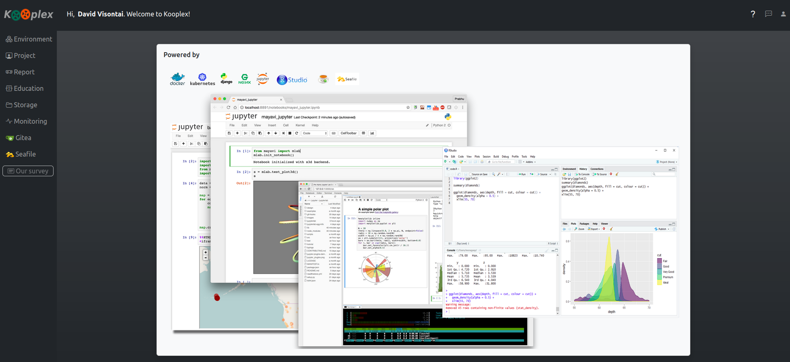

Welcome to Kooplex¶
Kooplex is a collaborative platform designed for coding, data analysis, and publishing results in a seamless, browser-based environment. Whether you are a researcher, educator, or student, Kooplex provides the tools you need to develop, share, and present your work efficiently.
What is Kooplex?¶
Kooplex brings together the power of interactive notebooks (such as Jupyter and RStudio), version-controlled repositories, and cloud-based file sharing into a unified workspace. It enables individuals and teams to:
- Write and run code in various programming languages
- Collaborate on projects with shared folders and version control
- Publish interactive reports and dashboards for wider audiences
- Teach and learn using assignment workflows and feedback tools

¶Key Features¶
- Browser-based environments: Access your coding workspace from anywhere, with no setup required.
- Project collaboration: Share data, code, and results with team members in real time.
- Integrated publishing: Turn your notebooks into interactive reports, dashboards, or APIs with a few clicks.
- Flexible storage: Organize your files with private, shared, and synchronized folders.
- Education support: Manage courses, assignments, and feedback for teachers and students.
Kooplex is open source and welcomes contributions from the community. For more information, visit the official Kooplex page or the source code repository.
Funded by 
Development of Digital Educational Method Competency Center Project id: 2022-1.1.1-KK-2022-00003